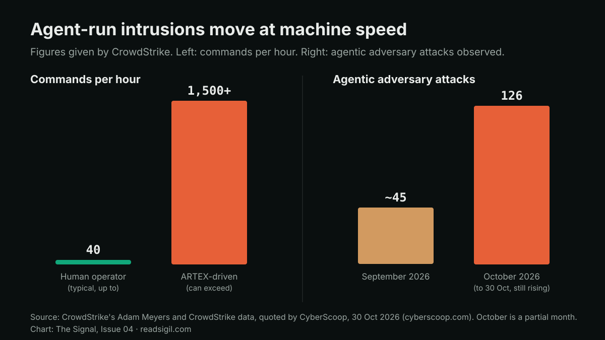

The Signal · Issue 04 · Cover story · Agents
1,500 commands an hour: the week agent-run hacking reached scale
CrowdStrike and Google's Mandiant each described attackers running agent frameworks against hundreds of organisations, financial firms among them. The techniques are old. The speed is new, and controls paced for human attackers will not keep up.

Facts are attributed and linked to their sources. The analysis and opinions are the author's own.
What it is
On 29 October CrowdStrike reported that a China-linked group it tracks as VAPOR PANDA has been running ARTEX, an agentic penetration-testing framework, mainly on DeepSeek plus a second commercial model it has not confirmed. Since 17 October the group went after more than 200 organisations in at least 14 countries over 11 days, from a single controller. CrowdStrike confirmed post-exploitation at nine organisations and password spraying against at least 12 more. One set of targets was 19 US organisations in the pharmaceutical, semiconductor, defence, nuclear and financial sectors. CyberScoop, which spoke to CrowdStrike, reported a wider figure: about 70% of targets were either confirmed compromised or showed moderate-confidence evidence of intrusion.
The details read like any intrusion report, only faster. In one intrusion, CrowdStrike says, the planning agents consumed on the order of 1.4 billion input tokens. The human operator's guidance appears in the logs labelled "human instruction", including "find Windows machines in the domain without Falcon". The ways in were familiar: an unsigned SAML assertion chained with an XXE flaw to reach a cloud metadata service, and mail-service keys from 2022 that had never been rotated. CrowdStrike also says this campaign is separate from the ARTEX activity Microsoft attributed to Storm-0940 earlier in October.
On 30 October Google's Threat Intelligence Group and Mandiant gave the wider picture. Since late August, they say, threat actors have used ARTEX, PentAGI, CAIRN and Hexstrike in incidents Mandiant responded to. ARTEX's original repository was taken down in October, but forks remain in circulation. The work arrives in bursts of roughly 2 to 25 seconds; one example logged 27 events in 23 seconds. It is also noisy. In one case an application's notification system was abused to email more than 1,300 internal users. Google notes public reporting of ARTEX being used against the financial sector in Asia.

Why it matters
CrowdStrike's Adam Meyers gave CyberScoop the number that matters. Hands-on-keyboard intrusions have typically run at up to 40 commands an hour. "Now, with ARTEX, we could see it exceed 1,500 commands an hour." CrowdStrike counted about 45 agentic adversary attacks in September and 126 in October at the time of the interview.
Most security and fraud controls in a bank are set for human attackers. Alert triage assumes an analyst looks within the hour. Privileged sessions are reviewed the next day. Keys are rotated once a year, if that. An attacker that completes 27 actions in 23 seconds is finished before the first ticket is opened. None of the techniques in these reports is new, and Meyers says so: the attacks are "just doing it at a speed and scale that we're unaccustomed to." That is the uncomfortable part. The gaps being exploited, such as unrotated keys, unsigned assertions and machines without endpoint protection, are already on every audit list.
The techniques are old. What changed is that the attacker no longer gets tired, and our controls were quietly counting on that.
The same logs also show where to defend. Agent-run intrusions are loud: bursts, volume, hundreds of events. Google sets out five layers of defence: protect control planes, use short-lived credentials, harden configurations, put guardrails on high-impact business APIs and detect on behaviour and volume. The one I would move first in finance is the API guardrail: rate, recipient and transaction limits enforced by the system, not by the model. Those limits work the same whether the caller is a person, a script or an agent. Pair them with short-lived credentials, and an attacker moving at machine speed hits a limit just as quickly. CrowdStrike's own list is shorter and just as practical: rotate keys, including copies in backups and exports, enforce SAML signature validation and IMDSv2, and run endpoint protection everywhere. In Meyers' words: "It's not hopeless, but you've got to take action."
What I'd watch
- Whether banks start measuring time to contain a privileged-session alert in minutes rather than hours.
- Whether ARTEX forks keep spreading after the takedown, and whether Google's expectation of further escalation within one to three months holds.
- Whether key-rotation programmes start covering keys held in backups and exports, as CrowdStrike recommends.
Sources
- VAPOR PANDA uses AI-driven ARTEX to grow global espionage campaign CrowdStrike, 29 Oct 2026.
- China-backed threat group used agentic AI pentesting tool to compromise 140 sensitive targets in 11 days CyberScoop, 30 Oct 2026.
- ARTEX and Friends: Enter Agentic Offensive Frameworks Google Cloud Threat Intelligence, 30 Oct 2026.